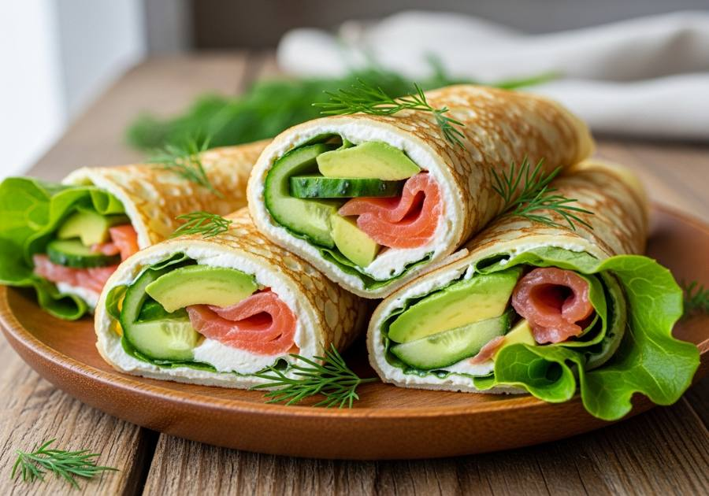

← Alle recepten

🍽 2 porties (4 pannenkoeken)
⏱ Voorbereiding: 15 min
🔥 Bereiding: 15 min
Σ Totaal: 30 min
Ingrediënten
- 1 grote mok (ca. 250 g) bloem
- 1 grote mok (ca. 250 ml) melk
- 1 ei
- 1 snufje zout
- 1 el olijfolie, plus extra voor bakken
- 1 handvol verse dille
- 150 g gerookte zalm
- 1 avocado, in plakjes
- 100 g roomkaas
- 1 ijsbergsla, in reepjes
- 2 lente-uien, fijngesneden
- 1/2 komkommer, in dunne plakjes
Bereiding
- Doe bloem, melk, ei, zout, olijfolie en dille in de blender.
- Mix tot een glad beslag zonder klontjes.
- Verhit een koekenpan met een klein beetje olie op middelhoog vuur.
- Schep een dun laagje beslag in de pan en bak elke pannenkoek 1-2 minuten per kant goudbruin.
- Herhaal tot al het beslag op is (ca. 4 pannenkoeken).
- Besmeer elke pannenkoek met roomkaas.
- Beleg met gerookte zalm, avocado, ijsbergsla, lente-ui en komkommer.
- Vouw dubbel of rol op en serveer direct.